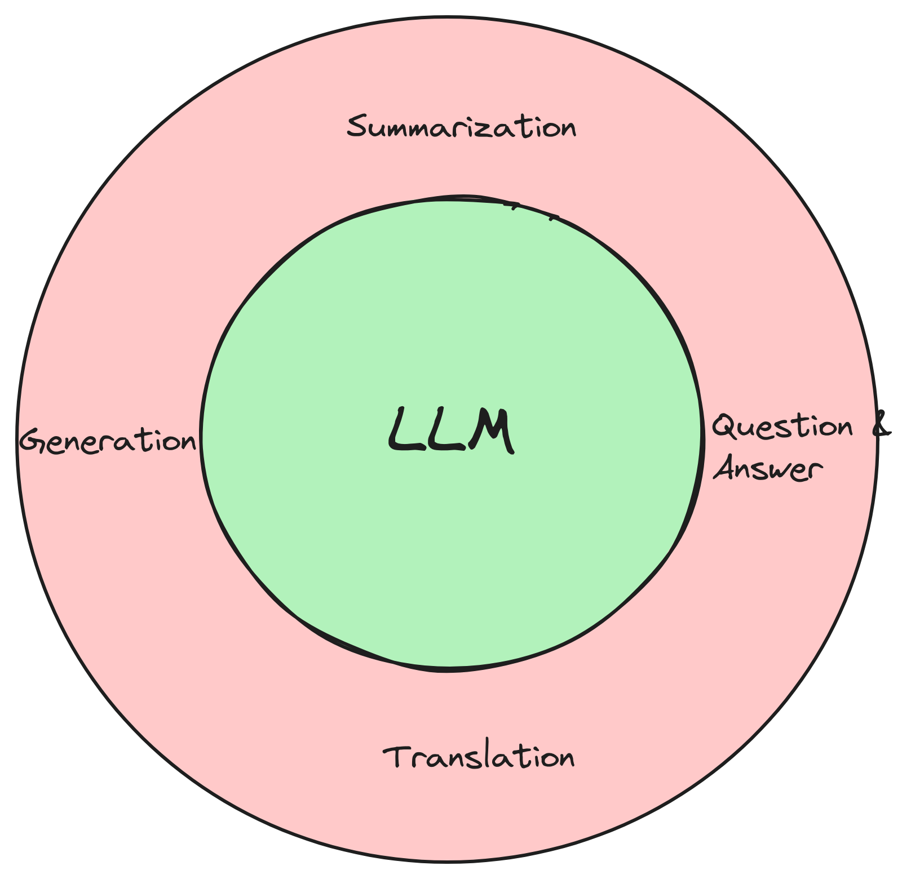
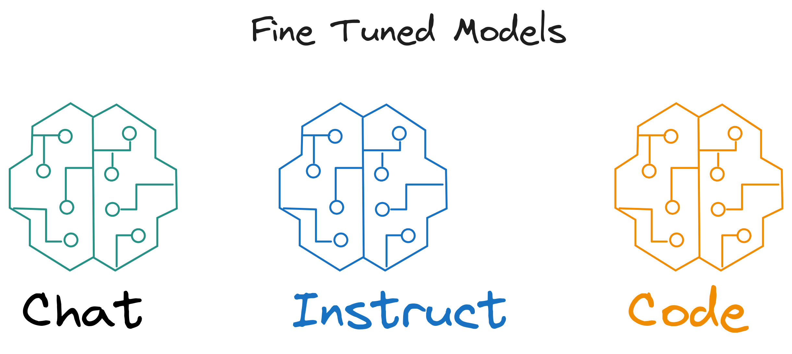
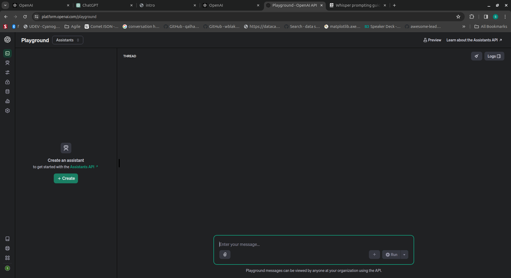
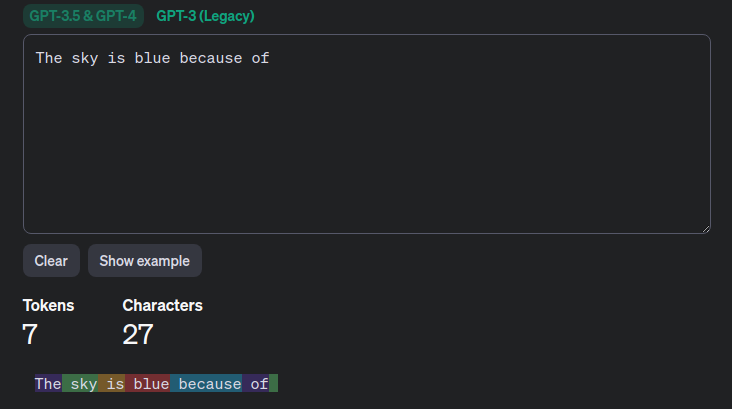
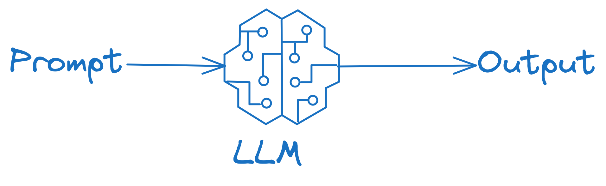

Introduction to Generative AI
LLM-App Development Course
Welcome to Generative AI
- Generative AI
-
Known as Generative Artificial Intelligence, is a branch of AI that focuses on creating new content, like text, images, music, and even code.
- Core functionality: Generates novel content in various formats (text, images, audio, code) based on learned patterns.
- Underlying technology: Employs machine learning models, often Large Language Models (LLMs) trained on vast amounts of data.
- Training process: Typically involves supervised learning, where the model is exposed to paired examples of input data and desired output, enabling it to learn the mapping between them.
- Applications: Diverse applications across various domains, including creative content generation, product design, drug discovery, and data augmentation.
GenAI Modeling Types


- Variational Autoencoders (VAEs): Encode data into a latent space and then decode it to generate new samples that maintain the original data’s statistical properties.
- Generative Adversarial Networks (GANs):
- a generator that creates new data and
- a discriminator that tries to distinguish real data from generated data.
What is LLM?
The fundamental part of Generative AI.
- Large:
- large refers to the massive amount of training data.
- size can range from hundreds of gigabytes to terabytes.
- Model weights size also too high
- Infrastructure for Training too.
- Language:
- model’s ability to understand and process human language.
- aspects like grammar, syntax, semantics, and pragmatics.
- adept at recognizing patterns and relationships within language.
- Model:
- kind of neural network architecture called a transformer.
- learns from the vast amount of data to identify patterns and relationships within language.
LLM Common Tasks
Fine Tuned Models
Commercial LLMs & Providers - OpenAI
| MODEL | DESCRIPTION |
|---|---|
| GPT-4 and GPT-4 Turbo | A set of models that improve on GPT-3.5 and can understand as well as generate natural language or code |
| GPT-3.5 Turbo | A set of models that improve on GPT-3.5 and can understand as well as generate natural language or code |
| DALL·E | A model that can generate and edit images given a natural language prompt |
| TTS | A set of models that can convert text into natural sounding spoken audio |
| Whisper | A model that can convert audio into text |
| Embeddings | A set of models that can convert text into a numerical form |
| Moderation | A fine-tuned model that can detect whether text may be sensitive or unsafe |
Commercial LLMs & Providers - Google
| MODEL | DESCRIPTION |
|---|---|
| Gemini 1.0 Pro | Designed to handle natural language tasks, multiturn text and code chat, and code generation. |
| Gemini 1.0 Pro Vision | Multimodal model that supports adding image and video in text or chat prompts for a text or code response. |
| Gemini 1.0 Ultra | Google’s most capable multimodal model, optimized for complex tasks including instruction, code, and reasoning, with support for multiple languages. |
| Gemini 1.0 Ultra Vision | Google’s most capable multimodal vision model, optimized to support text, images, videos, and multi-turn chat. |
| Gemini 1.5 Pro | Google’s mid-size multimodal model, optimized for scaling across a wide-range of tasks. Gemini 1.5 Pro supports long-context understanding with up to 1 million tokens. |
Commercial LLMs & Providers - Anthropic
| MODEL | DESCRIPTION |
|---|---|
| Claude 3 Opus | Most powerful model for highly complex tasks, Top-level performance, intelligence, fluency, and understanding |
| Claude 3 Sonnet | Ideal balance of intelligence and speed for enterprise workloads. Maximum utility at a lower price, dependable, balanced for scaled deployments |
| Claude 3 Haiku | Fastest and most compact model for near-instant responsiveness. Quick and accurate targeted performance |
| Claude 2.1 | Updated version of Claude 2 with improved accuracy, Legacy model - performs less well than Claude 3 models. |
| Claude 2 | Predecessor to Claude 3, offering strong all-round performance. Legacy model - performs less well than Claude 3 models. |
| Claude Instant 1.2 | Our cheapest small and fast model, a predecessor of Claude Haiku.Legacy model - performs less well than Claude 3 models. |
Open Source LLMs & Providers - Meta
| MODEL | DESCRIPTION |
|---|---|
| Llama 2 | The Llama 2 model family, offered as both base foundation models and fine-tuned “chat” models, serves as the successor to the original LLaMa 1 models. |
| Code Llama | Code Llama is state-of-the-art LLM on code tasks, and has the potential to make workflows faster and more efficient. |
| Llama Guard | a LLM-based input-output safeguard model geared towards Human-AI conversation use cases. |
LLMs List
OpenAI Playground
Tokens
- Token
- the basic units of data that Large Language Models (LLMs) process.
-
- both input and output data
-
- Tokenization vary depending on model tokenizer
-
- Every model has limit on max tokens
-
- LLM Providers charge per token and varies by model

OpenAI Tokenizer https://platform.openai.com/tokenizer
Prompt
- Prompt
- a piece of input text provided to the model to initiate or guide its generation of output.
-
- are foundational to interacting with LLMs
- it can contain instructs, context and examples
- Prompting is an engineering discipline
- as it involves systematic, skillful manipulation of input text to guide LLM to produce desired outputs
-
- are foundational to interacting with LLMs
- it can contain instructs, context and examples
- Prompting is an engineering discipline
- as it involves systematic, skillful manipulation of input text to guide LLM to produce desired outputs

Environment Setup
Software
- VSCode
- Python 3.1x
Create Virtual Environment
python -m venv genaivenv
#Linux output:
genaivenv/
├── bin
├── include
├── lib
├── lib64 -> lib
└── pyvenv.cfgActivate Virtual Environment
Create & export OpenAI API Key
Hello World! with OpenAI REST API
curl https://api.openai.com/v1/chat/completions \
-H "Content-Type: application/json" \
-H "Authorization: Bearer $OPENAI_API_KEY" \
-d '{
"model": "gpt-3.5-turbo",
"messages": [
{
"role": "user",
"content": "What is the capital city of India?"
}
]
}'
#output
{
"id": "chatcmpl-91FTnKGsJXddI5OyaiqXBOfPNq4l7",
"object": "chat.completion",
"created": 1710084859,
"model": "gpt-3.5-turbo-0125",
"choices": [
{
"index": 0,
"message": {
"role": "assistant",
"content": "The capital city of India is New Delhi."
},
"logprobs": null,
"finish_reason": "stop"
}
],
"usage": {
"prompt_tokens": 15,
"completion_tokens": 9,
"total_tokens": 24
},
"system_fingerprint": "fp_4f0b692a78"
}Using Python SDK
Install OpenAI Python SDK
Text & Code Generation
from openai import OpenAI
client = OpenAI()
# Non-streaming:
print("----- standard request -----")
completion = client.chat.completions.create(
model="gpt-3.5-turbo",
messages=[
{
"role": "user",
"content": "How to greet a person in Sanskrit",
},
],
)
print(completion.choices[0].message.content)
# Streaming:
print("----- streaming request -----")
stream = client.chat.completions.create(
model="gpt-3.5-turbo",
messages=[
{
"role": "user",
"content": "How do I generate n prime numbers using Python?",
},
],
stream=True,
)
for chunk in stream:
if not chunk.choices:
continue
print(chunk.choices[0].delta.content, end="")
print()OpenAI Speech Model
curl https://api.openai.com/v1/audio/speech \
-H "Authorization: Bearer $OPENAI_API_KEY" \
-H "Content-Type: application/json" \
-d '{
"model": "tts-1",
"input": "Welcome to Generative AI world! ",
"voice": "alloy"
}' \
--output speech.mp3Python Code
OpenAI Image Model
curl https://api.openai.com/v1/images/generations \
-H "Content-Type: application/json" \
-H "Authorization: Bearer $OPENAI_API_KEY" \
-d '{
"model": "dall-e-2",
"prompt": "A beautiful sunset at seashore with sun is clearly visible along with sea waves",
"n": 1,
"size": "1024x1024"
}'Python Code
from openai import OpenAI
openai = OpenAI()
prompt = "An early morning long drive in Ferrari car with clear visibility of Ferrari logo and sun"
model = "dall-e-2"
# Generate an image based on the prompt
response = openai.images.generate(prompt=prompt, model=model)
# Prints response containing a URL link to image
print(response)Google Gemini Model
Create API Key using AI Studio https://aistudio.google.com/

Python Code
Anthropic Claude API
Step 1: Create Claude API
Step 2: Use Anthropic Python SDK
WAIT….
We are already used OpenAI SDK, Google SDK, now another … come on
Not to worry, we have a saviour “One Framework for all (well most of all) LLMs”
LangChain 🦜🔗 - We will learn about it shortly!
Key Model Attributes
- Model Size
-
typically refers to number of parameters the model contains. Example Billion(B) Parameters
- Context Window
-
the number of tokens the model can process as input when generating responses.
- Max Tokens
-
Maximum tokens allowed by the model (both Input + Output).
- Prompt Template
-
Every Vendor model has its prompt template.
Prompt Engineering
Definition
- Google Definition:
- Prompt engineering is the art of asking the right question to get the best output from an LLM.
Why Prompting is Engineering?
Strategic Crafting: Crafting effective prompts requires understanding how different inputs influence the model’s outputs, requires strategic approach to elicit desired responses.
Optimization for Specific Tasks: Prompts must often be optimized for specific tasks or outcomes, such as generating code, writing in a particular style, or providing precise answers to questions.
Iterative Testing and Refinement: Finding the most effective prompt often involves iterative testing and refinement.
Adaptation to Model Variations: Different LLMs or even different versions of the same model may respond differently to the same prompt, requiring adjustments and customizations.
Balancing Brevity and Specificity: Effective prompts balance being concise enough for practical use while providing sufficient specificity to guide the model’s output accurately.
Leveraging Known Patterns: Experienced prompt engineers leverage known patterns and tricks that have been found to improve model responses, such as using certain phrasings or including specific instructions within the prompt.
Understanding of Model Capabilities and Limitations: Prompt engineers need a deep understanding of what the model can and cannot do, which guides how they frame prompts to avoid common pitfalls or misunderstandings.
Elements of Prompt
A prompt contains any of the following elements:
- Instruction: a specific task or instruction you want the model to perform
- Context: external information or additional context that can steer the model to better responses
- Input Data: the input or question that we are interested to find a response for
- Output Indicator: the type or format of the output.
Example Prompt
Classify the text into neutral, negative, or positive
Text: I think the food was okay.
Sentiment:
Instruction: Classify the text into neutral, negative, or positive
Input: I think the food was okay.
Context:
Output: Sentiment:
Simple Tips for Better Prompting
- The more detailed, the better output
Write code to calculate the Fibonacci sequence
Write a Python function to efficiently calculate the Fibonacci sequence. Comment the code to explain why it’s written that way.
- Explicitly mention the persona to adopt by the model
User Message: Suggest medicine to mild seasonal allergies
System Prompt: “You are a knowledgeable Medical Assistant. Provide advice on managing health concerns, emphasizing natural remedies and lifestyle changes where applicable. Ensure all suggestions are safe and generally recognized as effective by medical professionals. Remind users to consult a healthcare provider for personalized advice.”
User Message: “I’ve been struggling with mild seasonal allergies and I really prefer not to use over-the-counter medications. Are there any natural remedies or lifestyle adjustments I can try to alleviate my symptoms?”
Contd.
- Use delimiters to clearly indicate different parts of the input
Summarize the text delimited by triple quotes.
“““A very lengthy text to summarize”“”
- Clearly mention the desired output
Summarize the text delimited by triple quotes in 5 bullet points.
“““A very lengthy text to summarize”“”
- Add context information
Context: A car manufacturer is planning to introduce a new electric vehicle (EV) model targeted at young professionals who are environmentally conscious and prefer tech-savvy vehicles. The car is designed with advanced features such as autonomous driving capabilities, integrated smart home connectivity, and an AI assistant for vehicle diagnostics and personalized driving experiences. The company aims to position this model as a premium yet affordable option in the EV market. Task: Write a press release announcing the launch of the new electric vehicle, highlighting its unique features, target audience, and how it sets a new standard in the eco-friendly automotive industry?
Prompt Techniques
Zero-shot Prompting
- With single prompt instruction, getting the desired output
- Also knows as Direct Prompting
- Simplest prompt type
Classify the text into neutral, negative, or positive
Text: I think the food was okay.
Sentiment:
Few-shot Prompting
Few-shot Prompting
- Also knows as Multi-Shot prompting
- Need to provide one or more examples of what need to be done
- it enable in-context learning from the provided examples
Crystal clear display, perfect for movies. // Positive
Battery life not as advertised. Disappointed. // Negative
Easy setup, great sound quality. Would recommend! // Positive
Confusing instructions, took forever to install. // Negative
Lightweight and sleek design. Love it! // Positive
It doesn’t work! //
Chain of Thoughts (CoT)
Chain of Thoughts
- enables complex reasoning capabilities through intermediate reasoning steps.
- Combing with Few-Shot prompting gives better results
The odd numbers in this group add up to an even number: 4, 8, 9, 15, 12, 2, 1.
A: Adding all the odd numbers (9, 15, 1) gives 25. The answer is False.
The odd numbers in this group add up to an even number: 15, 32, 5, 13, 82, 7, 1.
A:
Other Techniques
- Prompt Chaining
- Tree of Thoughts
- Retrieval Augmented Generation (RAG)
- ReAct Prompting
- Multimodal CoT Prompting
- Graph Prompting
Model Parameters
Key parameters influence the LLM output
- Temparature
- controls the degree of randomness in the token selection
- Value ranges from 0 to 1
- 0 means the highest probability tokens are selected
- 1 means the opposite
- Select low value for more fact based scenarios
- Select highest value for more creative content
- top_p
- influence how the tokens are selected
- Tokens are selected from the most to least probable until the sum of their probabilities equals the top_p value
- value is range from 0 to 2
- for exact and factual outputs, low value is better
Model Parameters contd.
- top_k
- number of probable next words, to create a pool of words to choose from
- stop sequence
- sequence of characters to tell the model to stop generating content.
- on first encounter of these words model will stop generating the output.
- max_tokens
- specify the maximum number of tokens that can be generated in the response